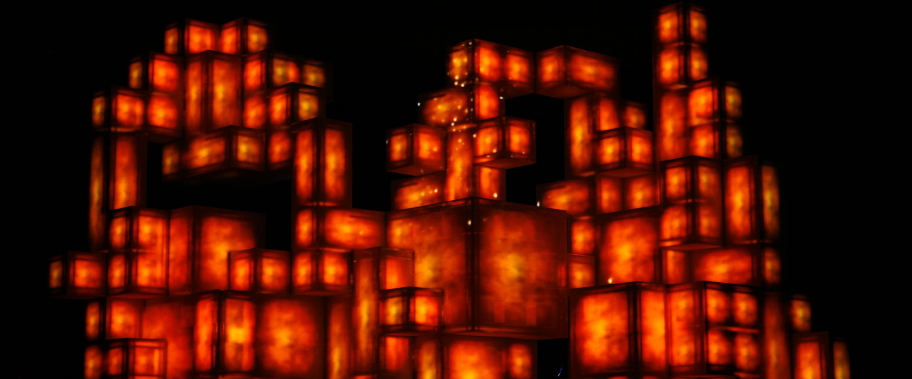
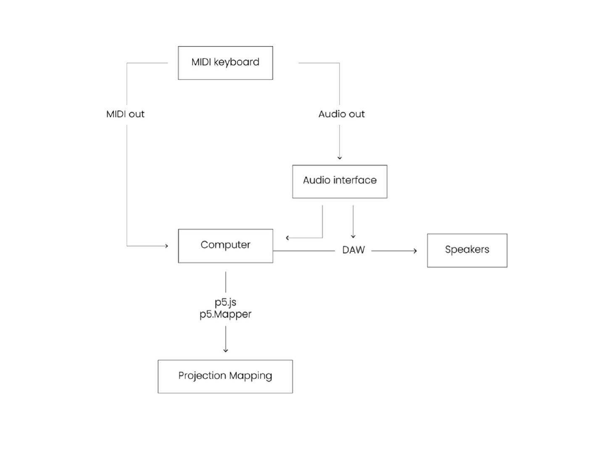

Revisited Compositions
A performative Art Piece
/ INTRODUCTION
Revisited Compositions is an audio-visual performance and a collaboration with a Portuguese musician. In the context of his practice, I investigate the concept of Intermedia, bringing sound and image together.
/ CONCEPT AND BACKGROUND RESEARCH
José Miguel Correia is a Portuguese musician working with me to explore how computation can combine two of his practices: music and painting. This project works as a form of interviewing by questioning the relationship between these two complementary artistic expressions. Through computation, I unveil the bond between his two practices, folding over the sound and the image. As an artist, I am producing a new layer of metadata over the work of another artist, by creating this moment of diffraction.
As I am researching through practice and through questioning, the first step was to study how his paintings and his music overlapped or intersected. I understood that both were very abstract and portrayed a narrative, either over space or over time. So, my goal was to explore a visualisation of his performance that focused not only on the embodiment of the music, but also how it could leak through the space surrounding him. I studied the concepts of diffraction and intermedia, which where fields explored by Fluxus artists when questioning the boundaries of sound and image.
One example that speaks a lot to me in the context of this project is the TV Cello by Nam June Paik, and the performance by Charlotte Moorman (Figures 1 and 2). What interests me in this example is the merging between the technology and the body, and how they create a narrative that takes over the performance space.
Figures 1 and 2 – TV Cello and Charlotte Moorman
Amon Tobin’s live performance (Figure 3) was another important reference for me, as he uses the boxes as canvas for projection mapping, which was a spark for me to work within the space of the performance.
Figure 3 – Amon Tobin ISAM live performance
For my project, I decided to use painting canvas, as it tied together perfectly all the elements I wanted to explore. Bellow you can see the first sketch as well as the result of the installation composition.
Figures 4 and 5 – Revisited Compositions, Installation space
/ TECHNICAL IMPLEMENTATION
The performance is based on a series of improvisation sequences on a piano that not only control the movement of five painting projections, but also how they cover the space, by appearing or disappearing on certain cues.
On technical terms, the project has three main elements: the sound input, the visual output and the projection mapping. Since the timeline was tight, I started by working with one outputted painting and its interaction with the sound played. For the visualisation, I used both a blur shader and a noise shader over a sketch of a 3D scene. Bellow you can see the process, heavily inspired by Juan Rodríguez García’s “Reflejos”.
Figures 6, 7 and 8 – Visualisation pipeline
I start by displaying a 3D scene with the right lighting, materials, colours and positioning of the objects. All this affects the final product, so I invested a lot of time experimenting and debugging to achieve the desired output. After this, I applied a noise shader over the previous image, using createGraphics() to save the outputted image to a graphics buffer. At this stage, I was already experimenting with the sound interaction, but did not feel completely satisfied with the visual output. My goal was to melt the shapes and colours together, to achieve the look of a traditional panting. So, using a third graphics buffer, I also applied a blur shader.
The use of shaders was crucial for my project, not only to achieve the desired feel, but also for the programme to use less computational resources, thus running smoother. At a very initial stage, I played around with noise functions on p5.js, and quickly understood that I wouldn’t be able to animate them.
After I successfully accomplished this, I scaled to multiple paintings on a projection. For this, I used the p5.Mapper library that, although limited, could successfully display the 5 paintings
For the sound interaction, I used both Midi and the standard audio input with the p5.js audio library. I understood relatively early that I wouldn’t have time to fully master the use of Midi input, so I just used it to solve what the audio data couldn’t achieve.
In terms of hardware and software, I used an electronic piano, an audio interface, one projector and my computer with both my JavaScript programme and Reaper as the Digital Audio Workstation (DAW).
Bellow you can see a diagram of the full pipeline.
Figure 9 – Pipeline diagram
/ REFLECTION AND FUTURE DEVELOPMENT
The most challenging aspects about this project were learning both shader language and how to work with audio data, two fields I had no previous knowledge about.
As explained in the previous section, using shaders was crucial to the computer performance. However, with its use, a lot of issues emerged. The first one being the restrictions the browser had for displaying WebGL graphics. Chrome supports 16 active WebGL buffers at the same time. For me to be able to display the 5 paintings (occupying 15 of those buffers), as well as using an extra canvas for the projection mapping, I had to free one WebGL buffer that the p5.Mapper library was using. This implied that I had to study its source code in order to be able to refactor it.
Other optimization issues emerged, so the most learning I had during the course of the implementation was on how to refactor code and optimize it around expensive computational functionalities, mostly removing loops in my functions. A specific example was the implementation of the functionality that stored multiple piano keys at the same time.
All these issues made me quickly realise that, for the future development of this project, I will need to use OpenFrameworks.
At the end, it was particularly interesting and rewarding to see the performer fully interact with the art piece, rather than simply showcasing his musical skills, working between the control he had and the unpredictable nature of the interaction. This collaboration gave me the opportunity to understand how I can further expand this project. There’s a lot to explore, throughout the process we found a lot of behaviours we would like to experiment with, but that didn’t fit in the timeline we had.
/ REFERENCES AND RESOURCES
/ CONCEPT
- Intermedia Art in the Digital Age
- Juan Rodríguez García, Reflejos
- Juan Rodríguez García
- TV Cello, Charlotte Moorman's performance
/ SHADERS
/ CODE